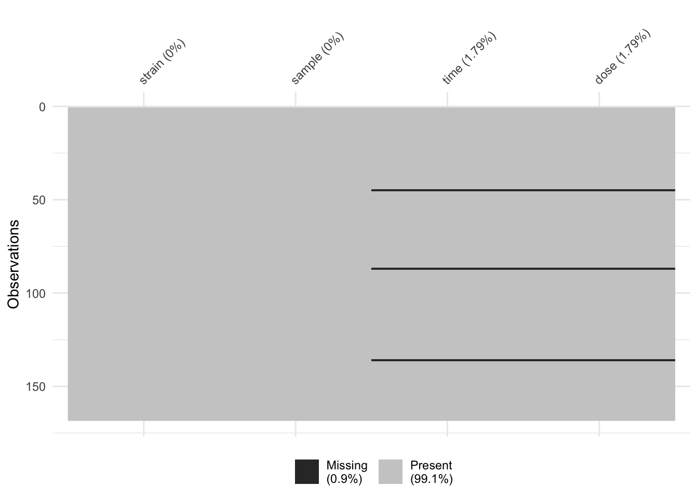

R, in particular the data.framedata.frame columnsdata.frame columnsdata.frame columnsdata.framedata.frame rowsdata.framedata.frame for next stage of analysislibrary(tidyverse)## ── Attaching packages ────────────────────────────────────────────────────────────────────────────────────────────────────────────────────────── tidyverse 1.2.1 ──## ✔ ggplot2 3.2.1 ✔ purrr 0.3.3
## ✔ tibble 2.1.3 ✔ dplyr 0.8.3
## ✔ tidyr 1.0.0 ✔ stringr 1.4.0
## ✔ readr 1.3.1 ✔ forcats 0.4.0## ── Conflicts ───────────────────────────────────────────────────────────────────────────────────────────────────────────────────────────── tidyverse_conflicts() ──
## ✖ dplyr::filter() masks stats::filter()
## ✖ dplyr::lag() masks stats::lag()library(janitor)##
## Attaching package: 'janitor'## The following objects are masked from 'package:stats':
##
## chisq.test, fisher.testlibrary(readxl)
library(visdat)Before we take a dive into the tidyverse, let’s take a quick minute to revise on some variable types in R. The reason that we want to do this is because everything in R is stored as a variable/object which ultimately determines its behaviours.
logical = c(TRUE, FALSE)
logical## [1] TRUE FALSEclass(logical)## [1] "logical"integer = 1:5
integer## [1] 1 2 3 4 5class(integer)## [1] "integer"numeric = rnorm(5)
numeric## [1] 0.67179458 2.22805361 -0.48834835 -0.04406991 -0.81623416class(numeric)## [1] "numeric"character = c("a", "b")
character## [1] "a" "b"class(character)## [1] "character"what_am_i = c(integer, character)
what_am_i## [1] "1" "2" "3" "4" "5" "a" "b"class(what_am_i)## [1] "character"how_about_me = list(integer, character)
how_about_me## [[1]]
## [1] 1 2 3 4 5
##
## [[2]]
## [1] "a" "b"class(how_about_me[[1]])## [1] "integer"class(how_about_me[[2]])## [1] "character"data(diamonds, package = "ggplot2")
diamonds## # A tibble: 53,940 x 10
## carat cut color clarity depth table price x y z
## <dbl> <ord> <ord> <ord> <dbl> <dbl> <int> <dbl> <dbl> <dbl>
## 1 0.23 Ideal E SI2 61.5 55 326 3.95 3.98 2.43
## 2 0.21 Premium E SI1 59.8 61 326 3.89 3.84 2.31
## 3 0.23 Good E VS1 56.9 65 327 4.05 4.07 2.31
## 4 0.290 Premium I VS2 62.4 58 334 4.2 4.23 2.63
## 5 0.31 Good J SI2 63.3 58 335 4.34 4.35 2.75
## 6 0.24 Very Good J VVS2 62.8 57 336 3.94 3.96 2.48
## 7 0.24 Very Good I VVS1 62.3 57 336 3.95 3.98 2.47
## 8 0.26 Very Good H SI1 61.9 55 337 4.07 4.11 2.53
## 9 0.22 Fair E VS2 65.1 61 337 3.87 3.78 2.49
## 10 0.23 Very Good H VS1 59.4 61 338 4 4.05 2.39
## # … with 53,930 more rowsclass(diamonds)## [1] "tbl_df" "tbl" "data.frame"In this session, we will read in a Excel dataset (xls format). We will use the readxl package to perform this task.
Of course, xls is not the only data type that R can deal with. Have a look at this cheatsheet to see some data types that the readr package is able to handle. If you want to read in SAS or SPSS files, have a look at the haven package.
The read_xls function from the readxl package is perfect to read in a xls data, let’s try that!
raw_data = readxl::read_xls(path = "data/sample_data.xls")## New names:
## * `` -> ...2
## * `` -> ...3
## * `` -> ...4
## * `` -> ...5
## * `` -> ...6
## * … and 1 more problemhead(raw_data)## # A tibble: 6 x 7
## `Supplementary Table … ...2 ...3 ...4 ...5 ...6 ...7
## <chr> <chr> <chr> <chr> <chr> <chr> <chr>
## 1 Sample Treatment and … <NA> <NA> <NA> <NA> <NA> <NA>
## 2 <NA> <NA> <NA> <NA> <NA> <NA> <NA>
## 3 Strain Sample "Time\n… "Dose\… RIN [ ng/µL… 260/280
## 4 HW HW1 1.5 0 9.80000… 1425.97 2.12000…
## 5 HW HW2 1.5 0 9.80000… 2006.33… 2.10999…
## 6 HW HW3 1.5 0 9.90000… 1043.49 2.14000…Oh, no! We seemed to read in a very ugly dataset. What happened?
If we open up the xls dataset up in Excel, we see that R didn’t do anything wrong! It actually faithfully read in everything that you can see in the Excel sheet. This xls data is poorly formatte with the first three rows being non-sense that is not relevant for data analysis. We should ask the function read_xls to skip the first three rows, use the 4th row as the data headings. How can we do that?
Have a look at this!
raw_data = readxl::read_xls("data/sample_data.xls", skip = 3)
head(raw_data)## # A tibble: 6 x 7
## Strain Sample `Time\n(hours)` `Dose\n(µg/kg)` RIN `[ ng/µL ]` `260/280`
## <chr> <chr> <chr> <chr> <chr> <chr> <chr>
## 1 HW HW1 1.5 0 9.80… 1425.97 2.120000…
## 2 HW HW2 1.5 0 9.80… 2006.33999… 2.109999…
## 3 HW HW3 1.5 0 9.90… 1043.49 2.140000…
## 4 HW HW4 1.5 100 9.59… 1931.45 2.109999…
## 5 HW HW5 1.5 100 10 524.259999… 2.129999…
## 6 HW HW6 1.5 100 9.5 2077.04 2.089999…The column names of this dataset isn’t quite as nice as we would like. For example, the “time” column has some strange symbols. We can remove these using the clean_names function from the janitor package. Even though this package is not a part of the tidyverse, but it is a very useful package nonetheless.
clean_col_data = raw_data %>%
janitor::clean_names()
clean_col_data## # A tibble: 168 x 7
## strain sample time_hours dose_µg_kg rin ng_µ_l x260_280
## <chr> <chr> <chr> <chr> <chr> <chr> <chr>
## 1 HW HW1 1.5 0 9.80000000… 1425.97 2.120000000…
## 2 HW HW2 1.5 0 9.80000000… 2006.33999… 2.109999999…
## 3 HW HW3 1.5 0 9.90000000… 1043.49 2.140000000…
## 4 HW HW4 1.5 100 9.59999999… 1931.45 2.109999999…
## 5 HW HW5 1.5 100 10 524.259999… 2.129999999…
## 6 HW HW6 1.5 100 9.5 2077.04 2.089999999…
## 7 HW WW45 3 100 9.80000000… 896.940000… 2.129999999…
## 8 HW WW46 3 100 9.80000000… 623.610000… 2.129999999…
## 9 HW WW47 3 100 9.40000000… 2351.84999… 2.080000000…
## 10 HW WW48 3 100 10 1588.03 2.089999999…
## # … with 158 more rowsWe will now use the dplyr package to perform some basic data cleaning. The dplyr package is one of the most popular packages inside the tidyverse. Its main functions are designed to interact with the data.frame object in R in a very intuitive way. This is why its name is an excellent pun: it is a plyer for data (okay, maybe it depends on your sense of humour).
Let’s see dplyr in action. If we want to select only the strain column of this data, then we can use the select function from the dplyr package.
sub_data = clean_col_data %>%
dplyr::select(strain)
sub_data## # A tibble: 168 x 1
## strain
## <chr>
## 1 HW
## 2 HW
## 3 HW
## 4 HW
## 5 HW
## 6 HW
## 7 HW
## 8 HW
## 9 HW
## 10 HW
## # … with 158 more rowsIf we want to select multiple columns in the data, we could include more names (unquoted) into the select function.
However, sometimes it is useful to select columns using a character vector, especially considering the “dose” column has a Greek symbol (nano-gram) inside.
clean_col_data %>%
dplyr::select(strain, sample)## # A tibble: 168 x 2
## strain sample
## <chr> <chr>
## 1 HW HW1
## 2 HW HW2
## 3 HW HW3
## 4 HW HW4
## 5 HW HW5
## 6 HW HW6
## 7 HW WW45
## 8 HW WW46
## 9 HW WW47
## 10 HW WW48
## # … with 158 more rowscolnames(clean_col_data) %>% tolower()## [1] "strain" "sample" "time_hours" "dose_µg_kg" "rin"
## [6] "ng_µ_l" "x260_280"select_columns = colnames(clean_col_data)[1:4]
select_columns## [1] "strain" "sample" "time_hours" "dose_µg_kg"sub_data = clean_col_data %>%
dplyr::select(one_of(select_columns))
sub_data## # A tibble: 168 x 4
## strain sample time_hours dose_µg_kg
## <chr> <chr> <chr> <chr>
## 1 HW HW1 1.5 0
## 2 HW HW2 1.5 0
## 3 HW HW3 1.5 0
## 4 HW HW4 1.5 100
## 5 HW HW5 1.5 100
## 6 HW HW6 1.5 100
## 7 HW WW45 3 100
## 8 HW WW46 3 100
## 9 HW WW47 3 100
## 10 HW WW48 3 100
## # … with 158 more rowsWe can also rename the columns.
sub_data %>%
dplyr::rename(time = time_hours)## # A tibble: 168 x 4
## strain sample time dose_µg_kg
## <chr> <chr> <chr> <chr>
## 1 HW HW1 1.5 0
## 2 HW HW2 1.5 0
## 3 HW HW3 1.5 0
## 4 HW HW4 1.5 100
## 5 HW HW5 1.5 100
## 6 HW HW6 1.5 100
## 7 HW WW45 3 100
## 8 HW WW46 3 100
## 9 HW WW47 3 100
## 10 HW WW48 3 100
## # … with 158 more rowsrename_columns = c("strain", "sample", "time", "dose")
sub_data = sub_data %>%
dplyr::rename_at(vars(select_columns), ~ rename_columns)
sub_data ## # A tibble: 168 x 4
## strain sample time dose
## <chr> <chr> <chr> <chr>
## 1 HW HW1 1.5 0
## 2 HW HW2 1.5 0
## 3 HW HW3 1.5 0
## 4 HW HW4 1.5 100
## 5 HW HW5 1.5 100
## 6 HW HW6 1.5 100
## 7 HW WW45 3 100
## 8 HW WW46 3 100
## 9 HW WW47 3 100
## 10 HW WW48 3 100
## # … with 158 more rowsThe mutate function in dplyr does exactly what you would expect: it changes an entire column. It has the structure that new column = some changes to the (old column).
sub_data %>%
dplyr::mutate(time_2 = as.numeric(time))## Warning: NAs introduced by coercion## # A tibble: 168 x 5
## strain sample time dose time_2
## <chr> <chr> <chr> <chr> <dbl>
## 1 HW HW1 1.5 0 1.5
## 2 HW HW2 1.5 0 1.5
## 3 HW HW3 1.5 0 1.5
## 4 HW HW4 1.5 100 1.5
## 5 HW HW5 1.5 100 1.5
## 6 HW HW6 1.5 100 1.5
## 7 HW WW45 3 100 3
## 8 HW WW46 3 100 3
## 9 HW WW47 3 100 3
## 10 HW WW48 3 100 3
## # … with 158 more rowsIf the new column has the same name as the old column, then this column will be over-written.
mutate_data = sub_data %>%
dplyr::mutate(time = as.numeric(time),
dose = as.numeric(dose))## Warning: NAs introduced by coercion
## Warning: NAs introduced by coercionmutate_data## # A tibble: 168 x 4
## strain sample time dose
## <chr> <chr> <dbl> <dbl>
## 1 HW HW1 1.5 0
## 2 HW HW2 1.5 0
## 3 HW HW3 1.5 0
## 4 HW HW4 1.5 100
## 5 HW HW5 1.5 100
## 6 HW HW6 1.5 100
## 7 HW WW45 3 100
## 8 HW WW46 3 100
## 9 HW WW47 3 100
## 10 HW WW48 3 100
## # … with 158 more rowsWhen we mutated our data, we saw that there was a warning message about NA, which is R’s way to represent a missing value. So what happened?
If we have a quick look at the original xls file, we see that someone must have copied the data with the heading four times. This is why when we converted time into a numeric variable, R recognised the column headings in the middle of the data as weird values and assigned those with NA.
We can visualise NA in our data using the vis_miss function from visdat.
mutate_data %>%
visdat::vis_miss()
mutate_data %>%
dplyr::filter(is.na(time))## # A tibble: 3 x 4
## strain sample time dose
## <chr> <chr> <dbl> <dbl>
## 1 Strain Sample NA NA
## 2 Strain Sample NA NA
## 3 Strain Sample NA NAfilter_data = mutate_data %>%
dplyr::filter(!is.na(time))
filter_data = mutate_data %>%
dplyr::filter(complete.cases(time))
filter_data## # A tibble: 165 x 4
## strain sample time dose
## <chr> <chr> <dbl> <dbl>
## 1 HW HW1 1.5 0
## 2 HW HW2 1.5 0
## 3 HW HW3 1.5 0
## 4 HW HW4 1.5 100
## 5 HW HW5 1.5 100
## 6 HW HW6 1.5 100
## 7 HW WW45 3 100
## 8 HW WW46 3 100
## 9 HW WW47 3 100
## 10 HW WW48 3 100
## # … with 155 more rowsfilter_data %>%
group_by(strain) %>%
count()## # A tibble: 2 x 2
## # Groups: strain [2]
## strain n
## <chr> <int>
## 1 HW 85
## 2 LE 80filter_data %>%
group_by(strain) %>%
summarise(n())## # A tibble: 2 x 2
## strain `n()`
## <chr> <int>
## 1 HW 85
## 2 LE 80filter_data %>%
group_by(strain, dose) %>%
count()## # A tibble: 18 x 3
## # Groups: strain, dose [18]
## strain dose n
## <chr> <dbl> <int>
## 1 HW 0 24
## 2 HW 0.001 4
## 3 HW 0.01 4
## 4 HW 0.1 4
## 5 HW 1 4
## 6 HW 10 4
## 7 HW 100 33
## 8 HW 1000 4
## 9 HW 3000 4
## 10 LE 0 27
## 11 LE 0.001 4
## 12 LE 0.01 4
## 13 LE 0.1 4
## 14 LE 1 4
## 15 LE 10 4
## 16 LE 50 4
## 17 LE 100 25
## 18 LE 1000 4filter_data %>%
group_by(strain, dose, time) %>%
count()## # A tibble: 36 x 4
## # Groups: strain, dose, time [36]
## strain dose time n
## <chr> <dbl> <dbl> <int>
## 1 HW 0 1.5 3
## 2 HW 0 19 7
## 3 HW 0 96 5
## 4 HW 0 240 5
## 5 HW 0 384 4
## 6 HW 0.001 19 4
## 7 HW 0.01 19 4
## 8 HW 0.1 19 4
## 9 HW 1 19 4
## 10 HW 10 19 4
## # … with 26 more rowswrite_csv(filter_data, path = "data/clean_sample_data.csv")sessionInfo()## R version 3.6.1 (2019-07-05)
## Platform: x86_64-apple-darwin15.6.0 (64-bit)
## Running under: macOS Mojave 10.14.6
##
## Matrix products: default
## BLAS: /Library/Frameworks/R.framework/Versions/3.6/Resources/lib/libRblas.0.dylib
## LAPACK: /Library/Frameworks/R.framework/Versions/3.6/Resources/lib/libRlapack.dylib
##
## locale:
## [1] en_AU.UTF-8/en_AU.UTF-8/en_AU.UTF-8/C/en_AU.UTF-8/en_AU.UTF-8
##
## attached base packages:
## [1] stats graphics grDevices utils datasets methods base
##
## other attached packages:
## [1] visdat_0.5.3 readxl_1.3.1 janitor_1.2.0 forcats_0.4.0
## [5] stringr_1.4.0 dplyr_0.8.3 purrr_0.3.3 readr_1.3.1
## [9] tidyr_1.0.0 tibble_2.1.3 ggplot2_3.2.1 tidyverse_1.2.1
##
## loaded via a namespace (and not attached):
## [1] tidyselect_0.2.5 xfun_0.10 haven_2.1.1 lattice_0.20-38
## [5] snakecase_0.11.0 colorspace_1.4-1 vctrs_0.2.0 generics_0.0.2
## [9] htmltools_0.4.0 yaml_2.2.0 utf8_1.1.4 rlang_0.4.1
## [13] pillar_1.4.2 glue_1.3.1 withr_2.1.2 modelr_0.1.5
## [17] lifecycle_0.1.0 munsell_0.5.0 gtable_0.3.0 cellranger_1.1.0
## [21] rvest_0.3.4 evaluate_0.14 labeling_0.3 knitr_1.25
## [25] fansi_0.4.0 broom_0.5.2 Rcpp_1.0.2 scales_1.0.0
## [29] backports_1.1.5 jsonlite_1.6 hms_0.5.2 digest_0.6.22
## [33] stringi_1.4.3 grid_3.6.1 cli_1.1.0 tools_3.6.1
## [37] magrittr_1.5 lazyeval_0.2.2 crayon_1.3.4 pkgconfig_2.0.3
## [41] zeallot_0.1.0 ellipsis_0.3.0 xml2_1.2.2 lubridate_1.7.4
## [45] assertthat_0.2.1 rmarkdown_1.16 httr_1.4.1 rstudioapi_0.10
## [49] R6_2.4.0 nlme_3.1-141 compiler_3.6.1